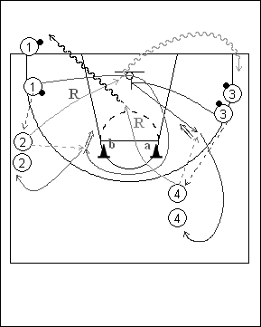

Catégorie : SHOOTS (Sh-011)
Déroulement
- Quatre files de joueurs. Une file avec ballons à une extrémité de la baseline; une file du même côté à hauteur de la ligne des lancers-francs; une autre file avec ballons dans le coin opposé et la dernière toujours du côté opposé au dessus de la ligne des trois points.
- Au signal du Coach, le premier joueur de la file 1 passe au premier de la file 2 et le premier de la file 3 passe au premier de la file 4. Le premier joueur de la file 3 place un écran sous l’anneau pour le premier joueur de la file 1 qui remonte en profitant de cet écran et en contournant les cônes a et b et reçoit le ballon du premier joueur de la file 2 pour un jump shoot. Après son écran, le premier joueur de la file 3 ressort, reçoit la passe du premier joueur de la file 4 également pour un jump shoot.
- Après les shoots, 1 va en 2, 2 réalise le premier rebond et va en 3, 3 va en 4 et 4 prend le deuxième rebond et va en 1.
Coaching points
- Le timing est hyper important : les deux premières passes doivent être réalisées simultanément dès le signal du Coach.